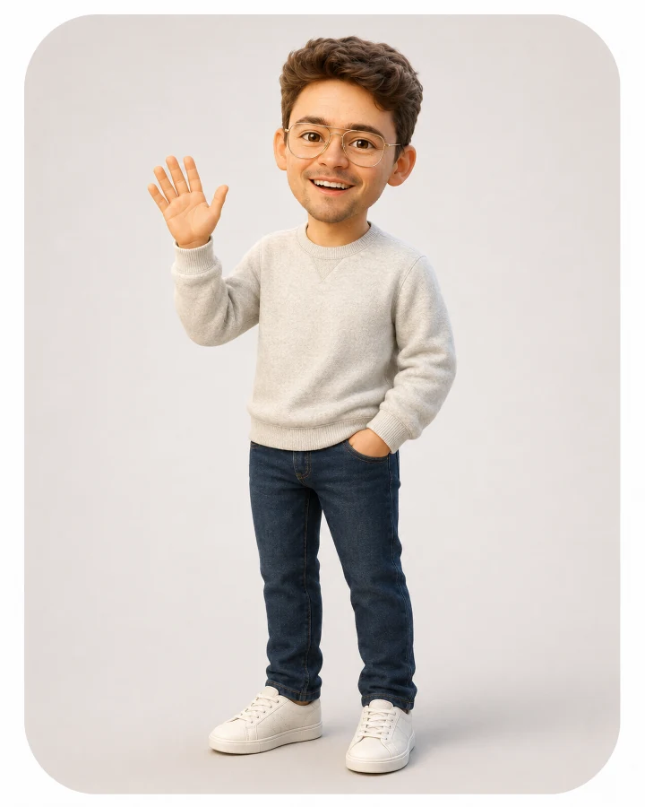

Website and UX
Porch Stomp
A clearer digital home for a growing festival, its artists, stages, archives, and supporters.
View case study AW
Andrew WolvertonCreative studio
AW
Andrew WolvertonCreative studio
Andrew Wolverton · Creative studio
Websites, campaigns, media, and practical systems for arts, cultural, nonprofit, and community-focused organizations.
Need a project? View services
Selected work
A clearer digital home for a growing festival, its artists, stages, archives, and supporters.
View case study
A music nonprofit built from mission and programs through governance, fundraising, communications, and operations.
Explore DSGMusic, pacing, storytelling, and performance work shaped for the room, the feed, or the listener.
Open the reelFounder story
I founded DSG to create more welcoming pathways into musicianship, recording, performance, and creative community. Building it has meant designing programs, shaping the mission, recruiting a board, creating fundraising and governance systems, developing communications, and testing what people actually need.
What I do
Each category opens into a quick explanation and one example. Full scopes and pricing live on the Services page.
Audits, information architecture, copy structure, responsive redesign, Wix, WordPress, HTML, CSS, and JavaScript.
See web servicesAudience strategy, campaign arcs, email and social coordination, landing pages, and production-ready content.
See campaign servicesDance mixes, podcast edits, performance tracks, medleys, cues, arrangements, and playback preparation.
See audio servicesPerformance edits, promotional video, short-form cuts, campaign video, and YouTube presentation.
See video servicesResearch, outreach, knowledge tools, content assistance, command hubs, and documented human approval points.
See workflow servicesSolo and ensemble performance, harmonica, vocals, guitar, piano, custom repertoire, and Rooftop Ramblers bookings.
See performance optionsTry the studio
No hidden hotspots required.
Open the studio iPod and choose from three artist recordings.
Play a guided musical phrase first, then open the full studio when you are ready.
Start playing
About Andrew
I have taught theater and choir, produced professional work, led an alumni council, raised money for arts organizations, built websites and campaigns, performed music, and founded a nonprofit. The through line is helping people make something together.
Read Andrew’s storySelected tools
How I work
Questions
Arts and cultural organizations, nonprofits, festivals, music and education programs, independent creative teams, and community-focused small businesses.
Yes. An audit, clarity sprint, prototype, or first-phase build can create a useful stopping point before a larger engagement.
AI can extend research, organization, drafting, testing, and production. Strategy, source checking, design direction, quality control, and final approval remain human-led.
A polished brief is not required. Bring the problem, the audience, what already exists, and any deadline or budget limits you know.
Start here
You do not need to arrive with the solution. Bring the problem, the audience, what already exists, and any deadline or budget limits you know.
anwolver@gmail.com